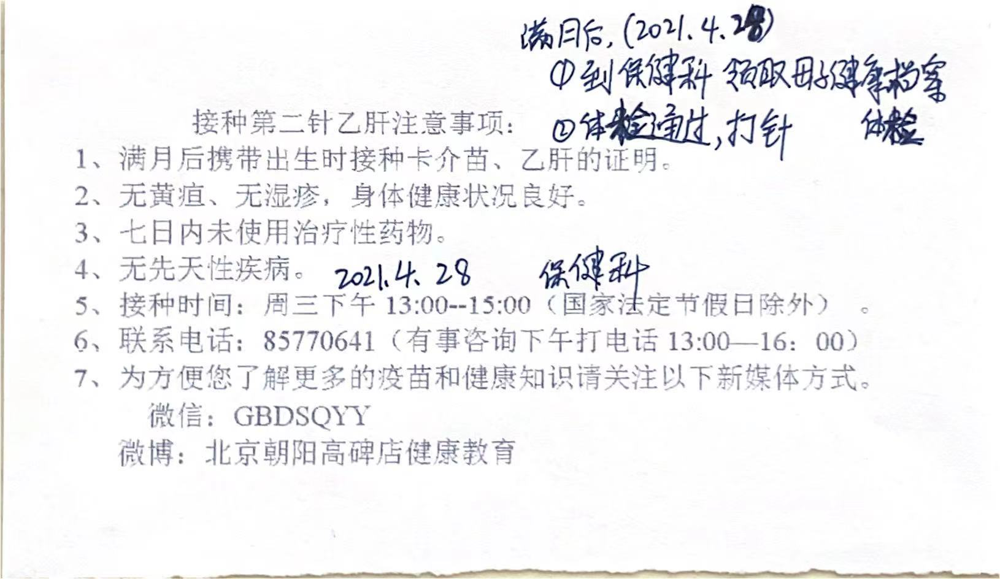

新生儿1年内要做的事
一、在出生医院需要做的事
背景医院：首都医科大学附属北京朝阳医院（东院区）
医院发的说明单

| 时间 | 名称 | 说明 |
|---|---|---|
| 产后3-7天 | 足跟血 (新生儿疾病筛查) |
携带出生医学证明首次签发登记表 和 补采血通知书，至门诊4层足跟血采集室采血。
北京市新生儿疾病筛查补采血通知书 |
| 产后1周内(或出院3天内) | 母子健康档案 |
送到居住地保健科（高碑店社区卫生服务中心）
交回说明 |
| 出院后3个工作日后 | 出院结算 | 持住院押金条，至门诊B1住院处办理结算 |
| 出生4个工作日后 | 出生医学证明 |
主要需要起好名字。
办理详情及须知
（1）重要性
《出生医学证明》是宝宝人生的第一个证件，是宝宝上户口、上保险、入托、入学、出国、坐飞机必用证件。请永久妥善保管，不能塑封，以免耽误使用。 （2）办理时间 每周一到周五，上午8:00~12:00，下午13:00~16:30，国家法定节假日休息。 （3）办理要求
办理《出生医学证明》授权委托书下载图片北京市助产机构内《出生医学证明》首次签发登记表下载图片 |
| 产后42天 | 产后复查 产后盆底复查 小儿42天复查 |
|
| 产后一周 | 盆底肌康复训练 |
产后42天到产后半年是治疗的黄金期 治疗前充分评估，治疗以每周3-5次为宜，治疗两周后进行阶段性评估，坚持治疗后再次进行评估，确保不会因个体差异而影响治疗效果。 参考：产后盆底肌多久能恢复？ |
{kind=link}
{kind=link}
二、需要办理的证件
1、【出生10天内】出生医学证明
地点： 宝宝出生的医院
时间要求： 宝宝出生30天内办理（超过1年，需要亲子鉴定）
需要资料：
- 宝宝姓名(后期无法更改)
- 父母双方身份证原件及复印件
- 《出生医学证明》首次签发登记表
- 如果超过1年不办理，需要进行亲子鉴定
- 《出生医学证明》必须由新生儿母亲申办。若特殊情况可以由新生儿父亲或者其他监护人来办理，但必须提供母亲亲笔签署的授权委托书。
2、【出生30天内】领取《入户登记卡》，办理入户
以赤峰为例。基本上每个地方的本地宝都可以查到。
办理地点： 父(母)户口所在地附近的派出所
办理条件：
1、出生时父母双方或一方是本市户籍居民，可在本市父(母)户籍所在地派出所申报出生登记。
2、出生时父母是双军人，且双方或一方是本市驻军部队现役军人，可在本市父(母)驻军所在地派出所申报出生登记。
3、本市、区社会福利机构抚养的弃婴(童)，统一在市公安局人口管理处申报出生登记。
4、符合一孩生育规定。
办理材料：
1、《婴儿出生登记申报表》。
2、申请人《出生医学证明》。
3、申请人父母婚姻法律文书（结婚证）;复印件要复印整本。
4、申请人父母户口簿、身份证。
5、拟登记地街道人口计生工作机构出具的用于出生登记的《计划生育服务单》 。
6、申请人满三周岁的，提交一张近期二寸免冠照片。双(多)胞胎申报的，提交小孩近期二寸免冠合照。
注：集体户口的要到住房建设局出具无房证明。
办理流程：
- (1) 婴儿监护人持申请材料到其常住户口所在地派出所进行申报并现场摄像。双(多)胞胎和国(境)外出生婴儿申报的，申请人需到场面视。
- (2) 派出所收到申请材料后，经过初审，分别作出以下处理：
- 申请材料齐全，符合受理条件的，应当及时受理，并现场摄像，按照受理类别当场办理登记或出具受理回执后呈报材料;双(多)胞胎和国(境)外出生婴儿申报的，需同时拍摄申报人及申请人图像。
- 申请材料不齐全，应当场一次性告知申报人需要补正的全部内容，退回申请材料，待材料齐全后受理。
- 不符合受理条件的，不予受理并将理由当场告知申报人。
- (3) 婴儿出生后，在申报出生登记前死亡的，应当同时办理出生、死亡两项登记。
- (4) 经审核批准入户的，由派出所通知监护人持本人身份证、户口簿、《户政业务受理回执》和申请人相片(满三周岁的提交近期一张一寸免冠标准照)到拟登记地派出所办理登记手续。满十六岁的，应办理身份证。
3、【出生50天内】工作居住证增加随迁人(宝宝)
以北京为例
工作居住证的政策优惠：
持有《北京工作居住证》者，在工作、生活等方面可享受北京市市民待遇：
- (1) 其子女在京入托、入中小学就读，免收借读管理费；
- (2) 可在本市行政区域内购买商品房、批准上市的已购公房和存量房，按有关规定购买经济适用住房；
- (3) 按照公安部的有关规定，对符合条件的，可在本市办理因私出国商务手续；
- (4) 可申请办理驾驶证或临时驾驶证以及机动车注册登记手续；
- (5) 可在本市创办企业，可以企业法定代表人身份申请认定高新技术成果转化项目和科技项目资助；
- (6) 可列入本市人才培养计划，并可参加本市有关人才、专家奖励项目的评选；
- (7) 可参加本市专业技术职务的任职资格评定(考试)、执业(职业)资格考试、执业(职业)资格注册登记；
- (8) 可参加本市基本养老保险、城镇职工基本医疗保险，并可按有关规定在本市缴存和使用住房公积金。
其他更多优惠待遇详见：关于实施北京市工作居住证制度若干意见的通知
办理指南：
提供如下材料提交至 公司人力资源：
- (1) 子女出生证明原件及复印件
- (2) 户口本首页及子女页原件及复印件
- (3) 本人结婚证原件及复印件
- (4) 随往人员变更申请—模板（公司提供）
- (5) 工作居住证确认单
另外在系统填写信息，提交子女随往的申请。北京市工作居住证系统
4、【出生80天内】少儿医保
以北京为例。
国家少儿医保一定要买，出生三个月内及时办理，迟了就亏大了！
北漂新生儿医保办理指南
（1）办理条件
持有《北京市工作居住证》人员的子女：需要把子女随迁到父亲或者母亲工作居住证上
（2）办理时间
- 新生儿：自孩子出生90日内，办理的是出生当月至当年年底的保险，以后每年的保险自动在银行卡中扣款。（建议80天，万一资料不合格，有个缓冲期）
- 除新生儿外：只能在每年的集中参保期(每年的9月至11月)办理次年1月1日至12月31日的参保缴费手续。
（3）费用
2020年参保费用是300元/年(保费由每年政策变动而变化)
（4）办理地点
持有工作居住证的人员应按证上的地址(居住地址)对应街道社保所办理，而非现住地。
（5）办理材料
- 户口本(原件、首页复印件2份);
- 宝宝户口页(原件、复印件2份);
- 出生三个月内的新生儿，应当同时提供《出生医学证明》原件、复印件;
- 北京银行借记卡(一小孩名义开户)(复印件1份)。注：首次参保的，建议借记卡内存入1000元;
- 2张一寸白底免冠正面彩色照片(注意：宝宝照片必须是冲洗的光面、不能是打印的，睁眼，深色服装)+电子版照片(格式要求：jpg格式，宽度为358像素，高度为441像素，文件不小于9KB，不大于20KB)
- 需工作居住证首页&随迁页复印件，其中变更的，续签的页也需要;
- 填写《北京市城镇居民基本医疗保险参保缴费申报表》一式两份。
---------------------------------------以下为详细内容------------------------------------------------
（1）少儿医保的好处
新生宝宝身体抵抗力弱，除了容易出现感冒发烧，还有很多婴幼儿高发疾病，如黄疸，肺炎。
这类疾病虽然不严重，但也少不了住院治疗。这一来二去，是一笔不小的开支。
以之前深圳罗某笑小朋友为例，生病住院共产生医疗费用20来万，而医保直接报销了16万多，报销比例高达82%。
所以，少儿医保一定要有。一年只要200多块，就可以报销七八成费用！
（2）参保范围
1、 北京市非农业户籍：具有北京市非农业户籍的学龄前婴幼儿均可申领医保卡。
2、持有《北京市工作居住证》人员的子女：
3、子女随迁到 父(母)的《北京市工作居住证》上
外地户籍的宝宝是不能办理北京市一老一小社保的，但如果父母双方有一方有工作居住证的，首先需要把子女随迁到父亲或者母亲工作居住证上，然后就可以为宝宝办理医保卡。
（3）办理时间
“一小”的社保办理时间不是什么时候都可以的，分为新生儿与非新生儿两种情况。
A. 新生儿80天
自孩子出生90日内，办理的是出生当月至当年年底的保险，以后每年的保险自动在银行卡中扣款。
建议最好出生80天内就去办理哦，留出时间富裕，万一资料不合格，有时间调整资料哦。因为需要户口复印件，所以需要给宝宝上完户口后才能办理“一小”。
B. 除新生儿外(包括未在90日内参保的新生儿)：
只能在每年的集中参保期(每年的9月至11月)办理次年1月1日至12月31日的参保缴费手续。也就是说，宝宝出生到本年年底的医疗费用就没法报销，第二年也不能报销门诊的费用，只能报销住院费。
因为社保所有规定：门诊待遇需要连续两年缴费才可享受，按规定时间(90天内)参保的新生儿当年即可享受，否则次年不享受门诊待遇。所以宝宝出生90天内未办理完成，那么出生当天到本年年底的医疗费用就没法报销喽，第二年也不能报销门诊的费用，只能报销住院费。
（4）参保费用
2020年参保费用是300元/年(保费由每年政策变动而变化)。
（5）办理地点
新生儿宝宝的家长需要到孩子户口所在地的街道/社区社保所领取《城镇居民基本医疗保险参保登记表》，填写社会保障卡发行注册申请表，且只能办理养老、医疗保险两种。
提示：持有工作居住证的人员应按证上的地址对应街道社保所办理 《城镇居民基本医疗保险参保登记表》，而非现住地。
（6）办理材料
A. 夫妻双方均为北京市户口：
1、户口本(原件、首页复印件2份);
2、宝宝户口页(原件、复印件2份);
3、如出生三个月内的新生儿，应当同时提供《出生医学证明》原件、复印件;
4、邮政储蓄银行(个人账户结算存折)或借记卡，或者北京银行借记卡(一小孩名义开户)(复印件1份)。注：首次参保的，建议借记卡内存入1000元;
5、2张一寸白底免冠正面彩色照片(注意：宝宝照片必须是冲洗的光面、不能是打印的，睁眼，深色服装)+电子版照片(格式要求：jpg格式，宽度为358像素，高度为441像素，文件不小于9KB，不大于20KB)
6、如外地户口，需工作居住证首页和随迁页复印件，其中变更的，续签的页也需要;
7、填写《北京市城镇居民基本医疗保险参保缴费申报表》一式两份。
B. 外省市户口
如果宝宝父母是外地户口且具有《北京市工作居住证》的，还要求再加印工作居住证的所有信息页以及孩子的《出生医学证明》复印件各1张。
C. 夫妻一方是北京市户口
如果宝宝为农业户口，父亲或者母亲一方必须具备北京城镇居民户口才可以参保，提供其中一方居民户口本复印件，上印户主，下印本人页，出生证明复印件各1张。
（7）常见问题
A. 19家A类医院是什么?是三甲医院都不用选吗?
19家A类医院是指北京市医疗保险不受定点医院限制的19家医院。19家医院中大部分都是三甲医院，也有少数二甲医院，并不是三甲医院就是A类，不在这19家范围之内的三甲医院如果看病需要报销的话还是要选择的。19家医院名单：宣武医院、同仁医院、北京友谊医院、北医三院、北大人民、协和医院、积水谭医院、北大妇幼(北京大学第一医院)、广安门医院、北京朝阳医院、中日友好医院、天坛医院、首钢医院、北京中医医院、大兴区人民医院、健宫医院、房山区良乡医院、石景山医院、世纪坛医院(北京铁路总医院);包括这些医院的各个分院或分诊部，如积水潭回龙观医院，北医三院育新门诊部等。
B. 我家孩子12月出生的，月子里也没什么需要报销的项目，直接从第二年开始交保费就可以了吧?
根据规定，新生儿参保当年可以直接享受门诊报销待遇，否则要连续两年缴费才能报销门诊费用。虽然第二年参保没有超过90天，但是作为新生儿参保的政策是从出生日开始计算的，否则按照统一参保期间参保，只能是每年的9-11月。也就是说，要么从出生日开始参保，要么就等到9-11月统一参保下一年度，然后从下下年开始才能报销门诊费用。所以，就算是12月31日出生的孩子，也建议当年参保。
但是其实年底出生的孩子确实会面临一个可能性，就是如果社保局年底封账之前孩子的社保卡还没办下来，上一年度的医疗费用就不能报销了。而一般来说社保卡的办理速度从一个月到半年不等……(总之一句话，年底出生的就是比较亏)
C. 我看病的时候没带社保卡怎么办?
可以拿材料到社保所手工报销，不过并不建议这么做，因为手工报销需要社保卡原件，很可能两三个月才能回来，如果这个期间又生病了……反反复复无穷尽了。。。
D. 我搬家了，想变更定点医院怎么办?
每年9月1日-11月30日集中参保期去全市任意一家社保所办理即可。
（8）最后提示
每年9月之前记得确保账户余额足够扣款，至少比需要扣款数多10元才能扣款成功，比如一年保费160元的话，账户里至少要有170元;10月下旬记得查一下账户余额，看看是否扣款成功，如果不成功最晚11月底之前去社保所查下原因并及时补缴，不然过了集中缴费期就没法办理第二年的社保了。
三、需要打的疫苗
宝宝出生后，医院会给我们一本《接种证》：

每次打完疫苗，医生都会记录下来，作为已接种的证明。
可别小瞧这本册子，如果没按要求接种，将会影响孩子上幼儿园、小学。
满月后打疫苗时间 
1、【免费】北京市免疫规划疫苗

2、【自费】北京市常用非免疫规划疫苗推荐程序

3、接种疫苗可预防的疾病

4、其他推荐疫苗及信息
（1）五联疫苗：省时又省心
爸妈们对五联疫苗都不陌生，打完就能预防五种儿童常见疾病：
包括百日咳、白喉、破伤风、脊髓灰质炎、Hib 引发的肺炎。
五联的优势有两点： 省时省力：要预防这 5 种病，如果打普通疫苗，要打 12 针，而五联只需打 4 针。 降低风险：宝宝不仅能少挨 8 针，也降低了交叉感染、疫苗不良反应的风险。
不过五联并不便宜，4 针就要 2500 元，建议有经济能力的家长考虑。
另外，这种疫苗很容易缺货。我们有同事跑了好几家社康，才给孩子打齐。
你可以通过疫苗预约平台，或联系接种中心，查看最新疫苗库存，有货就赶紧去打。
（2）世卫组织最推荐的3种疫苗
我国目前没有自费疫苗的官方推荐，但世界卫生组织（WHO）最推荐的有 3 种，分别是：肺炎、Hib、流感疫苗。
① 肺炎球菌疫苗
肺炎球菌性疾病，是导致 5 岁以下儿童死亡的首要病因，而接种疫苗是最有效的预防手段。
肺炎疫苗分为 13 价和 23 价，建议 2 岁以下的宝宝打 13 价， 2 岁以上打 23 价。
前段时间，一款新的国产 13 价肺炎疫苗获批上市，只要在 6 周岁前都能打。
如果之前错过了接种时间，可以给孩子补打。
② Hib 疫苗
预防肺炎、脑膜炎Hib 是“b 型流感嗜血杆菌”的简称，它可以导致肺炎、脑膜炎等，5 岁以下的儿童发病率较高。
接种 Hib 疫苗，是预防肺炎、脑膜炎最经济最有效的方法。
提醒一下，如果打了五联疫苗，由于它已包含 Hib 疫苗，就不需要再单独接种了。
③ 流感疫苗
流感虽然也叫 感冒 ，但它的破坏力可不是普通感冒能比的。
流感的症状通常是：39℃ 以上的高温，持续 3 - 5 天，甚至 7 天不退，让孩子和家长尝尽苦头......
儿童更是易感人群，患病概率约 20-30%。也就是说，每 4 个孩子中，就会有 1 个患上流感。
流感的高发季节是每年的冬春季，所以 最好在 10 月底之前完成接种。
（3）值得考虑的疫苗
除了世界卫生组织的官方推荐，以下疫苗同样建议考虑。
主要包括： * 轮状病毒疫苗：预防凶猛的 “秋季腹泻”。 * EV 71 疫苗：预防手足口病重症。 * 水痘疫苗：预防孩子极易感染的水痘病毒。 * HPV 疫苗：预防宫颈癌，9 岁以上的女孩就可以打。
不少家长对于手足口和轮状病毒胆战心惊，要是孩子班里有一人感染，全班都得停课。
为了避免小孩遭罪、大人心疼，通过打疫苗来预防疾病，这个钱花得值。
5、疫苗常见疑问
（1）打了疫苗，就百毒不侵吗？
同一种疾病，可能由不同的病毒导致，疫苗只能预防其中一部分。
以手足口病为例，它可能由 EV71、CA16、埃可病毒等引起，疫苗只能预防最容易引发重症的 EV71。
所以，打疫苗只是“抓主要矛盾”，并不是打完就 100% 不会中招。
（2）疫苗补打，还有用吗？
宝宝要打的疫苗有很多，如果忘记打，及时补打就好。
有些疫苗没有时间限制，比如乙肝、脊灰、麻风疫苗等，可以随时补种。
有些疫苗有时间限制，比如五联、百白破、流脑等，如果超时，可以用其他疫苗代替。
也有些疫苗，超出一定年龄就不能补打了，比如卡介苗、Hib、轮状病毒疫苗等。
具体如何处理，建议有针对性地咨询医生。
（3）国产疫苗和进口疫苗，哪个更好？
全球对疫苗的质量要求都很高，无论国产还是进口，质量并没有什么差别。
而在价格上，国产疫苗比进口的要低一些。大家根据自己偏好来选择就行，不需要太纠结。